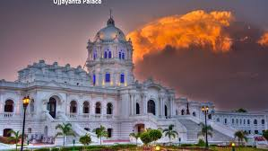
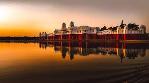
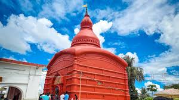

Ujjayanta Palace

Located in Agartala, it is a magnificent former royal palace of the Tripura Kingdom, now serving as the state museum, showcasing the region's history and culture.
Neermahal Palace

A stunning water palace built in the middle of Rudrasagar Lake, featuring a mix of Hindu and Mughal architectural styles, often compared to the Jal Mahal in Jaipur.
Tripura Sundari Temple

Located in Udaipur, it is one of the 51 Shakti Peethas (significant shrines in Shaktism) and is considered one of the most sacred Hindu temples in the state.
Sepahijala Wildlife Sanctuary
A dense forest and wildlife park known for its spectacular lake, botanical garden, and various species of primates, including the famous Spectacled Monkey.
Dumboor Lake

A picturesque water body covering a vast area with numerous islands, formed by the confluence of two rivers, offering serene boating and bird-watching opportunities.